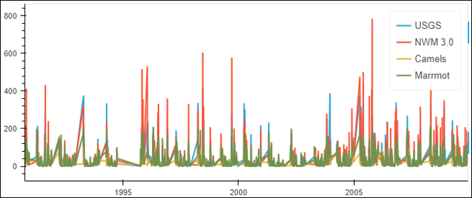
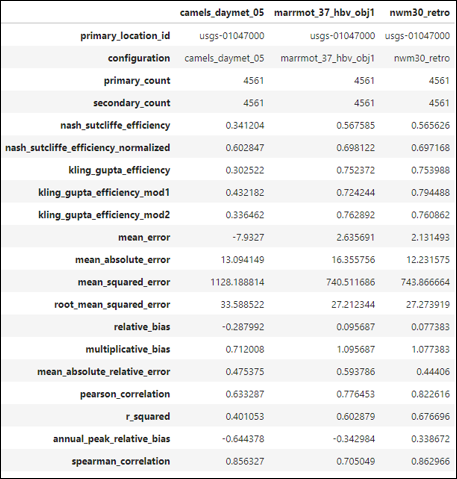
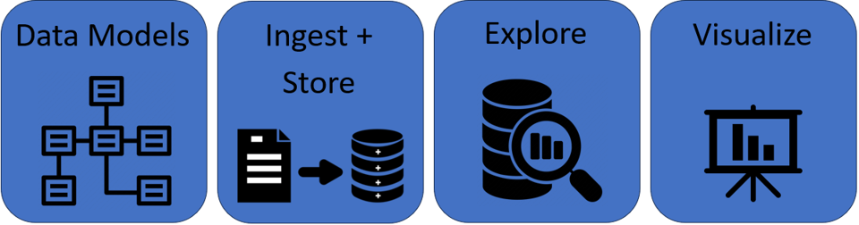

Getting started#
Installation#
There are several methods currently available for installing TEEHR.
You can install from github:
# Using pip
pip install 'teehr @ git+https://github.com/RTIInternational/teehr@[BRANCH_TAG]'
# Using poetry
poetry add git+https://github.com/RTIInternational/teehr.git#[BRANCH TAG]
You can use Docker:
docker build -t teehr:[RELEASE TAG] .
docker run -it --rm --volume $HOME:$HOME -p 8888:8888 teehr:[RELEASE TAG] jupyter lab --ip 0.0.0.0 $HOME
Importing TEEHR into your project#
At its simplest, TEEHR is a collection of classes and modules that can be imported into your project:
teehr
|__loading
| |__nwm
| | |__nwm_grids
| | |__nwm_points
| | |__retrospective_grids
| | |__retrospective_points
| | |__ ...
| |__usgs
| | |__ ...
| |__nextgen
| | |__ ...
|__classes
|__duckdb_database
|__duckdb_joinedparquet
|__ ...
The loading directory contains modules for fetching and loading data into the TEEHR data model from various sources.
The classes directory contains classes for performing model evaluation and calculating performance metrics.
Fetching and Loading Data#
To fetch and load retrospective NWM point data (ie, streamflow), you can import the retrospective_points module:
# Import the module for loading NWM retrospective point data.
from teehr.loading.nwm import retrospective_points
# Define the parameters.
NWM_VERSION = "nwm20"
VARIABLE_NAME = "streamflow"
START_DATE = datetime(2000, 1, 1)
END_DATE = datetime(2000, 1, 2, 23)
LOCATION_IDS = [7086109, 7040481]
OUTPUT_ROOT = Path(Path().home(), "temp")
OUTPUT_DIR = Path(OUTPUT_ROOT, "nwm20_retrospective")
# Fetch and load the data.
nwm_retro.nwm_retro_to_parquet(
nwm_version=NWM_VERSION,
variable_name=VARIABLE_NAME,
start_date=START_DATE,
end_date=END_DATE,
location_ids=LOCATION_IDS,
output_parquet_dir=OUTPUT_DIR
)
Model Evaluation#
TEEHR provides a set of classes for evaluating model performance using DuckDB either with parquet files
or a persistent database. To evaluate a model based on a parquet file of pre-joined timeseries data, you can
import the DuckDBJoinedParquet class:
from teehr.classes.duckdb_joined_parquet import DuckDBJoinedParquet
Refer to the API Reference for a full list of classes and modules available in TEEHR.
An Introduction to TEEHR#
TEEHR is a collection of tools for evaluating and exploring hydrologic timeseries data. It is designed to be efficient, modular, and flexible, allowing users to work with a variety of data sources and formats. Quantifying the performance of a model can be a relatively simple task consisting of comparing the model output to observed data through a series of metrics.
{kind=link}

{kind=link}

Evaluating simulations vs. observations through a series of performance metrics.#
Understanding the reasons why a model performs well or poorly is a more complex task. It requires efficient, iterative exploration of the data, often across large spatial and temporal scales.
These are the challenges that TEEHR is designed to address.
Note
TEEHR is designed to provide efficient iterative exploration of billions of rows of timeseries data across large spatial and temporal scales.
At its core, TEEHR consists of four main components:
Data Models: A set of schemas that define the structure of the data.
Data Ingest and Storage: Tools for fetching and loading hydrologic data into an efficient storage format.
Exploration: A set of tools for quantifying and understanding model performance.
Visualization: Tools for visualizing the data and results. [work-in-progress]
{kind=link}

The four main components of TEEHR.#
TEEHR Components#
For more details on each component of TEEHR, see the following tutorials:
Additional Tutorials#
For a full list of metrics currently available in TEEHR, see the Available Metrics documentation.